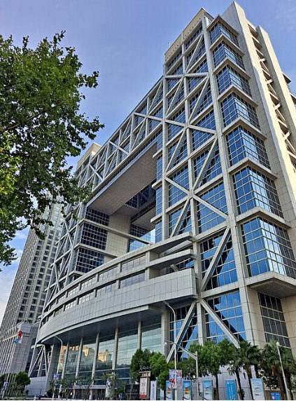

Los mercados y las bolsas internacionales.
Asia y Mercados Emergentes
Objetivo
Comprenderás que los mercados financieros del futuro no estarán solo en Nueva York o Frankfurt: Asia y América Latina son el escenario de las oportunidades y riesgos más intensos del siglo XXI —y que entender sus índices es entender hacia dónde se mueve el mundo.
Explicación
Hemos recorrido un camino largo hoy. Desde los índices bursátiles hasta Ámsterdam 1602, desde el IBEX-35 hasta Wall Street. Para cerrar, vamos a completar el mapa con las regiones que determinarán cada vez más el comportamiento de los mercados globales: Asia y América Latina.
Empecemos por Japón y el . Este índice agrupa a las 225 empresas más representativas de la Bolsa de Tokio: Sony, Toyota, SoftBank, Mitsubishi, Honda. Es el termómetro de la tercera economía del mundo. Pero lo que hace al Nikkei verdaderamente extraordinario no es su composición, sino su historia.
En diciembre de 1989, el Nikkei alcanzó su máximo histórico: casi 39.000 puntos. Era el pico de la mayor burbuja de activos del siglo XX en Japón —precios inmobiliarios y bursátiles completamente desconectados de la realidad económica. Cuando estalló, el índice comenzó una caída que duró años. Décadas de estancamiento. Lo que en Japón se conoce como las "décadas perdidas".
¿Cuánto tardó el Nikkei en recuperar ese nivel de 1989? 35 años. No fue hasta 2024 cuando el índice japonés volvió a superar sus máximos de hace más de tres décadas. Es la mayor lección de paciencia —y de riesgo— que ofrece la historia de los mercados financieros.
Pasamos a China, y aquí hay algo que importa entender bien: China no tiene una sola bolsa. Tiene, al menos, dos mundos bursátiles distintos:
- La —con el índice Shanghai Composite— es el mercado continental, denominado en yuanes, con acceso limitado para inversores extranjeros. Refleja la economía interna china: grandes bancos estatales, compañías energéticas, empresas industriales.
- La Bolsa de Hong Kong —con el — fue históricamente el puente entre China y el mundo occidental. Empresas chinas que quieren acceder al capital global cotizan allí en dólares de Hong Kong, con reglas más próximas al modelo internacional. La tensión política entre China continental y Hong Kong —agudizada desde las protestas de 2019 y la Ley de Seguridad Nacional de 2020— ha añadido una capa de riesgo geopolítico.

Y cerramos el mapa con América Latina: dos índices, dos historias completamente distintas:
- El de Brasil es uno de los mayores mercados emergentes del mundo. Brasil es la mayor economía de la región, rica en recursos naturales —petróleo, soja, minerales críticos— y con una clase media enorme. Es también un mercado volátil, sensible a los tipos de cambio y al precio de las materias primas.
- El argentino es el caso más extremo de la región: uno de los mercados más volátiles del mundo, con inflaciones anuales que llegaron al triple dígito, controles de capital y una historia económica llena de crisis y reseteos. Para el inversor especializado, el Merval ofrece oportunidades extraordinarias en ciertos momentos —como en 2024, cuando fue el índice de mayor rentabilidad del mundo. Para el inversor no preparado, es uno de los mercados más peligrosos del planeta.
Analogía
Los mercados emergentes son como los barrios en proceso de gentrificación de una ciudad. En los barrios consolidados —Nueva York, Frankfurt, Londres— los precios son altos, la seguridad es mayor y el crecimiento es más lento pero predecible. En los barrios emergentes —São Paulo, Shanghái, Mumbai— hay más ruido, más incertidumbre, más volatilidad. Pero también más potencial de revalorización para quien sabe dónde y cuándo entrar.
El riesgo y la oportunidad siempre van juntos. Lo que diferencia al inversor informado del especulador impulsivo es saber exactamente qué tipo de barrio está pisando.
Contexto financiero real
Japón lleva décadas con tipos de interés cerca de cero —o negativos— como forma de estimular una economía atrapada en deflación. Cuando el Banco de Japón empieza a subir tipos, como hizo tímidamente en 2024, los mercados globales lo notan: el carry trade del yen —pedir prestado en yenes baratos para invertir en activos con mayor rentabilidad— se deshace bruscamente, generando turbulencias en todo el mundo.
China tiene una segunda particularidad crucial: el gobierno interviene activamente en sus mercados, tanto para estimularlos como para frenarlos. En 2015 intentó —sin éxito— detener una caída bursátil masiva comprando acciones directamente. En 2020-2021, reguló de forma severa sus gigantes tecnológicos —Alibaba, Tencent— eliminando billones de capitalización en semanas.
América Latina está en el mapa de los mercados emergentes principalmente por sus materias primas: petróleo venezolano y colombiano, cobre chileno y peruano, soja y hierro brasileños, litio boliviano y argentino. En un mundo que necesita cobre para la electrificación y litio para las baterías de los vehículos eléctricos, la región tiene una relevancia estratégica que va muy por delante de sus mercados bursátiles.
Complemento actualizado
(Datos recientes — fuentes: CNBC, Invezz, BlackRock / Bolsa de Comercio de Rosario — 2025/2026)
Japón: En noviembre de 2025, el Nikkei 225 cerró por encima de los 50.000 puntos, liderado por valores tecnológicos. En abril de 2026, el Nikkei alcanzó los 58.350 puntos, acercándose de nuevo a su máximo histórico, con una trayectoria hacia los 59.000-60.000 puntos.
América Latina: En 2025, las bolsas latinoamericanas tuvieron rendimientos muy desiguales: Brasil acumuló un +44% en dólares, mientras que el S&P Merval argentino en moneda dura quedó un 5% por debajo de sus niveles de un año antes —siendo uno de los índices de peor rendimiento relativo del año, a pesar de que 2024 había sido extraordinario con un +122,6% medido al tipo de cambio financiero.
Mercados emergentes globales: 2025 fue un año récord en entradas de capital en mercados emergentes: los ETPs de deuda y renta variable de mercados emergentes recaudaron 152.000 millones y 103.000 millones de dólares respectivamente, según datos de BlackRock y Markit.
⚠ Los datos de composición de índices (Nikkei 225, Hang Seng, Bovespa, Merval) pertenecen al contenido original de la presentación. Los datos de rendimiento 2025-2026, el récord del Nikkei y los flujos de capital a mercados emergentes son información actualizada de fuentes externas.
Preguntas difíciles y respuestas
«¿Tiene sentido para un inversor europeo o español invertir en mercados emergentes como Argentina o Brasil, dado el riesgo que suponen?»
Tiene sentido si se hace con conciencia de lo que se está haciendo. Los mercados emergentes no son para poner el ahorro que uno necesita o el capital que no puede permitirse perder. Son para una parte del portafolio —lo que los gestores llaman "capital de riesgo"— con la que se acepta una volatilidad mayor a cambio de un potencial de retorno superior. La forma más segura de acceder a ellos para un inversor minorista no es comprar acciones individuales de una empresa argentina o brasileña, sino a través de ETFs diversificados sobre el MSCI EM, que reparten el riesgo entre cientos de empresas de decenas de países.
«China es ya la segunda mayor economía del mundo, pero su bolsa tiene restricciones para los inversores extranjeros. ¿Cuándo se abrirá completamente y qué pasará cuando lo haga?»
Es una de las preguntas más importantes de la próxima década en los mercados financieros. China ha abierto gradualmente sus mercados —el programa Stock Connect de Hong Kong, la incorporación parcial de acciones chinas A en el MSCI— pero mantiene controles de capital significativos. Cuando —y si— China abre completamente sus mercados, el flujo de capital internacional sería masivo: hablamos de la segunda economía del mundo con mercados que hoy representan solo una fracción de su peso económico real en los índices globales. Ese momento reordenará el mapa financiero mundial de forma significativa.
Autoevaluación
¿Cuánto tardó el Nikkei 225 en recuperar su máximo histórico de diciembre de 1989?
El Nikkei alcanzó su máximo histórico en diciembre de 1989, rozando los 39.000 puntos, en el pico de la mayor burbuja de activos del siglo XX en Japón. Cuando estalló, comenzó una caída que duró décadas —las llamadas "décadas perdidas". No fue hasta 2024, 35 años después, cuando el índice volvió a superar ese nivel. Es la mayor lección de paciencia —y de riesgo— que ofrece la historia de los mercados financieros.
La respuesta correcta es: 35 años. El Nikkei alcanzó su máximo en 1989 y no lo recuperó hasta 2024. Las "décadas perdidas" de Japón son una de las advertencias más importantes de la historia financiera sobre lo que ocurre cuando estallan las burbujas de activos.
Cierre narrativo de la sesión
Esta es el último tema del contenido de esta mini-web. Si tuviera que resumir todo lo que hemos visto hoy en una sola idea, sería esta:
Los mercados financieros no son una realidad paralela para especialistas con trajes grises. Son el sistema nervioso de la economía global. Cada vez que llena el depósito de gasolina, que su empresa accede a un crédito, que su plan de pensiones crece o se contrae, que el tipo de cambio encarece sus vacaciones... hay un mercado detrás. Un índice. Una decisión de un banco central. Una reacción de millones de inversores.
Entender eso no convierte a nadie en especulador. Convierte a las personas en ciudadanos más informados, capaces de leer el mundo con más claridad y de proteger mejor sus intereses económicos.